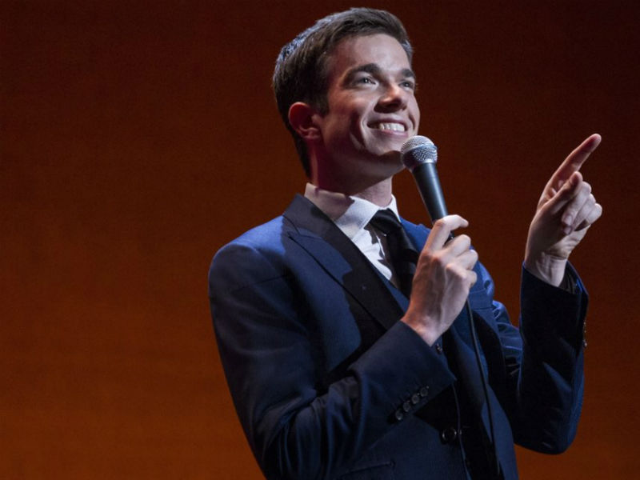
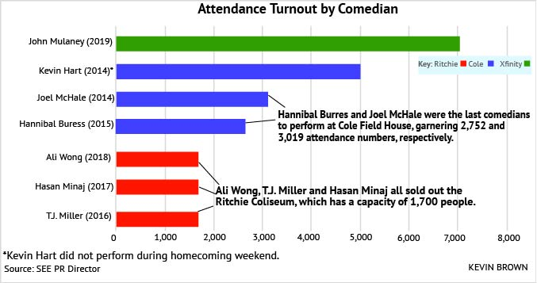
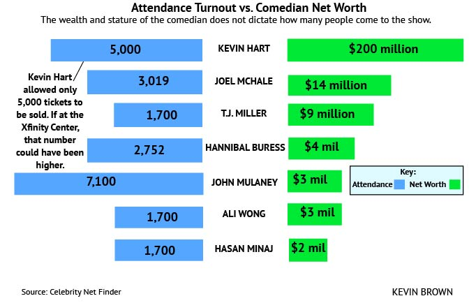

John Mulaney brings added hype to SEE’s 2019 homecoming comedy show
[Photo Courtesy Saeed Adyani/Netflix]
By Kevin Brown
December 4, 2019
Emmy award-winning writer and comedian John Mulaney came to Maryland’s Xfinity Center on Wednesday, Oct. 30 for the Student Entertainment Events homecoming comedy show, bringing with him an unparalleled level of excitement for campus entertainment.
SEE is entirely run by University of Maryland students, as they work throughout the school year to book comedians and music artists to come to campus. The former SNL writer and stand-up comedian was one of the biggest named comedians to grace College Park’s campus.
“If you think about it, he’s the biggest we’ve had since Kevin Hart came in 2014,” said Hospitality Director Olivia Brady. “Ali Wong sold out last year, but at a much smaller venue in Ritchie [Coliseum].”
“One of the names that came up was John Mulaney, because he is, from the research we found, one of the biggest names if not the biggest name right now.”
Mulaney is no stranger to the greater Washington, D.C. area, having graduated from Georgetown in 2004. It’s there that he started doing comedy through his improv club with Nick Kroll, a comedian he’s worked on countless projects with throughout his career. They collaborated on the Kroll Show, Oh, Hello on Broadway, and Netflix’s Big Mouth – which just released the latest Season 3 early in October.
Before jump starting his stand-up comedy career, Mulaney worked as a writer on Saturday Night Live for several years, a common subject he brings into his stand-up routines.
Mulaney has done three hour-long Netflix stand-up specials, with his most recent being “Kid Gorgeous”, released in May 2018. His performance was awarded an Emmy for Outstanding Writing in a Variety Special.
Senior biology major Sam Phillips was ecstatic when he heard the news Mulaney was coming to perform at Maryland.
“For being as popular as he is, it was cool to see all the crowd interaction he still did with a college crowd,” Phillips said. “That was great to see him engaging Maryland.”
In the past, well-known comedians have been known to sell out smaller venues like Ritchie. The last three years has been Wong, Hasan Minaj and T.J. Miller, who brought special guest Damon Wayans Jr. Yet, this year has a different buzz around it. Mulaney is at the peak of his comedy powers after touring the country on his tour with SNL’s Pete Davidson.
[Screenshot: Netflix]
“We wanted to do an Xfinity show, we wanted it to be more accessible to more students,” SEE comedy director Yoad Merin told The Diamondback. “One of the names that came up was John Mulaney, because he is, from the research we found, one of the biggest names if not the biggest name right now.”
SEE’s budget specifics for Mulaney’s comedy show were not disclosed.
Still, below you can see a comparison of the attendance numbers compared to the performers who came for SEE’s homecoming comedy show in the last five years.
Minaj and Wong sold out the Ritchie Coliseum’s maximum capacity of 1,700 people for both their Friday and Saturday night shows. Miller’s show had to be moved from the Xfinity Center to a sold-out Ritchie after SEE overestimated ticket projections. In 2015, Hannibal Burress brought 2,752 fans to Cole Field House. Before that, Joel McHale had 3,019 people come to Cole Field House in 2014.
The show this year brought four thousand more people to see the highly rated Mulaney. Those fans got to hear the comedian read the school’s independent school newspaper, The Diamondback, on stage.
Despite all the buzz and anticipation going into this year, there were still many general admission tickets left for the general public. According to Rodriguez, a total of 7,500 tickets were sold. After booking a top comedian like Mulaney, Brady said SEE had the goal of selling out the 17,950-person capacity of the Xfinity Center.
On a rainy night and during Game 7 of the Washington Nationals quest to defeat the Houston Astros in the World Series, it’s estimated that there were just over 7,000 fans in attendance for the show.
For context, Hart brought in the next highest attendance for a Maryland comedy show, although he only allowed 5,000 tickets to be sold – all of which were, in fact, sold.
In terms of net worth, Hart and Mulaney are on polar opposite ends thanks to the myriad of movies Hart has starred in. Still, their statures on the stage are much closer than what their wealth gap portrays.
The hype for Mulaney may have provided a negative effect for some Maryland students.
“I was a big fan of his earlier stuff, like right when he started doing comedy shows after leaving SNL,” said senior journalism major Ryan Homler. “Now, I don’t find myself laughing at his more recent material, and I don’t find that much of a need to go to his show.”
Homler said he’s enjoyed the homecoming comedy specials from the past, including Miller and Minaj’s shows. Missing Wong’s show last year due to work obligations, Homler wasn’t too pressed on making it to his last show as a senior.
For commuter students who aren’t always around campus to catch the miscellaneous promotional flyers, such as senior finance major Nick Bryant, getting to know about the event itself might be the biggest challenge to get there.
“I wish they advertised it more online,” Bryant said. “I get a lot of emails and am not always on campus, so I didn’t even know Mulaney was coming to campus.”
To ensure the Xfinity Center is rocking with laughter with a sold-out crowd, SEE will have to explore different ways of getting the word out. Though, even that might not be enough.
“Our advertising department has done a lot to make sure the whole school knows who is coming to campus and when,” said Brady. “At the end of the day, sometimes it’s on the students to know what’s going on around campus.”